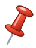
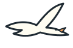

Creatieve vormgever
Grafisch werk vind ik leuk, maar ik volg opdrachten vaak letterlijk. Ik wil meer experimenteren en gebruiksvriendelijke interfaces bouwen.

werkplekleren

Grafisch werk vind ik leuk, maar ik volg opdrachten vaak letterlijk. Ik wil meer experimenteren en gebruiksvriendelijke interfaces bouwen.
Ik werk projectmatig en plan mijn eigen werk. Websites coderen vind ik uitdagend, maar ook echt leuk.
Ik werk graag in team, al werk ik soms liever alleen. Ik waardeer feedback en wil zelf duidelijke feedback geven.
Ik reflecteer elke dag kritisch op mezelf, volg de regels en vind privacy en duurzaamheid belangrijk.
WPL2
Pokr is een mobile-first app voor kleine teams in Belgische kmo's. Teams beheren en volgen hun bedrijfsdoelen op één centrale plek, in plaats van in losse Excel- of PowerPoint-bestanden.